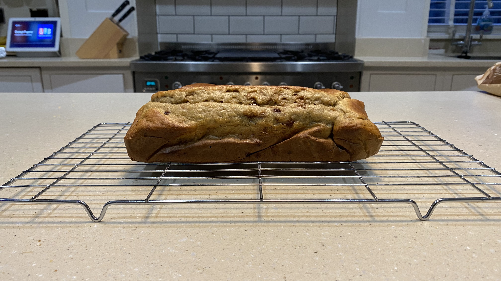

Banana Bread - Diabetes Friendly
Do you have Diabetes? Does a loved-one? Are you going through a low-sugar phase?
If you answered yes to any of the above, then this scrumptious banana bread recipe is for you...

Ingredients:
- 140g self-raising flour
- 3 medium eggs
- 1.2tsp baking powder
- 200g mashed bananas
- 4tbsp granulated sweetener
- 40g milk chocolate chips
- 1tsp Madagascan vanilla essence
Step-by-step instructions:
- Preheat oven to 180 degrees (160 fan)
- In a mixing bowl combine
- Flour
- Baking powder
- Sweetener
- In a separate bowl, mash the bananas until smooth
- Whisk eggs into the bananas, adding vanilla essence to the mix
- Add the banana mixture to the flour mixture, whisk until smooth
- Mix in the milk chocolate chips
- Add the mixture to a loaf tin lined with baking paper and bake for 20-25 minutes
- Check on the bread 5 minutes from the end, as you might have to cover the top with foil to prevent burning